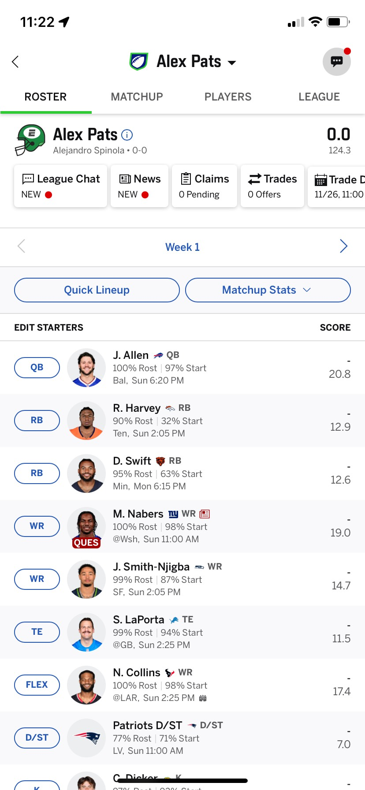
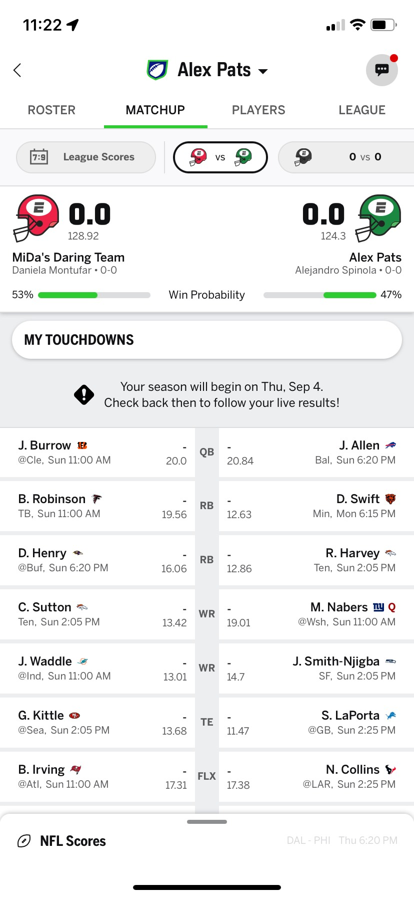
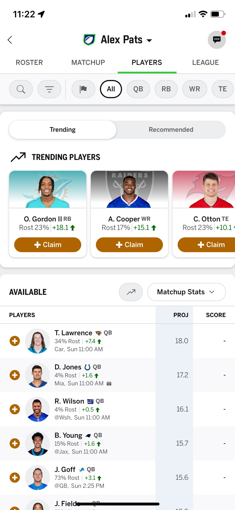
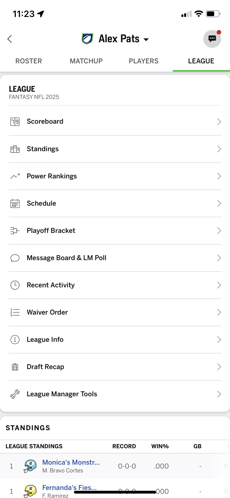

Bienvenid@s a la liga!
Arma tu equipo con jugadores reales de la NFL y suma puntos según su desempeño. Cada semana compites contra otro equipo. ¡Quien tenga más puntos, gana!
1) Reglas de la liga
- Equipos: 10
- Entrada: $50
- Premiación: Por Definir
- Draft: Automático (este año)
- Roster: 16 jugadores / 9 titulares
- Formato: 1v1 por puntos
- Puntuación: pases, recepciones, carreras, pateo, defensa y jugadas especiales.
TIP: la app sugiere titulares y avisa si hay lesiones o descansos (BYE), para los lesionados te avisa su proyección de cuando puede regresar.
2) Fechas clave
- 📅 Draft automático: Por definir
- 🏈 Inicio temporada: 4 de septiembre de 2025
- 🏆 Playoffs Fantasy: Semanas 14–17 NFL
Formato semanal
- Tu equipo enfrenta a otro cada semana.
- Solo los titulares suman.
- La banca es para suplentes
3) Cómo se juega cada semana
A) Ajusta tu alineación
- Antes de los partidos, elige titulares y banca.
- La app marca lesiones y descansos.
- Si dudas, revisa las proyecciones.
B) Gana tu enfrentamiento
- Quien sume más puntos en la semana, gana.
- Empates normalmente se mantienen como empate (según reglas de la liga).
C) Administra tu equipo
- Waivers/Agentes libres: agrega jugadores no reclamados.
- Trades: negocia con otros equipos.
- Noticias: vigila lesiones, rachas y cambios de titularidad.
4) Deadlines (fechas y horas límite)
Regla de oro: Un jugador queda bloqueado cuando empieza el partido de su equipo en la vida real. Desde ese minuto ya no puedes moverlo.
- Jueves por la noche: primer juego de la semana. Revisa titulares antes
- Domingo (temprano y tarde): se bloquean quienes juegan en esas ventanas.
- Lunes por la noche: último partido; aún puedes mover a quienes no hayan jugado.
Tip: si puedes, deja a los jugadores del lunes en FLEX para mantener más opciones de reemplazo.
5) Proyecciones
ESPN muestra cuántos puntos se espera que haga cada jugador esa semana. Son una guía, no una garantía.
- Úsalas para decidir entre jugadores de nivel similar.
- Proyección “0” puede significar lesión o BYE.
6) Bye Weeks (descansos)
¡Ojo! Si un jugador está en BYE, hace 0 puntos. No lo dejes de titular.
- La app lo marca con “BYE”.
- Planea con una semana de anticipación para cubrir huecos.
7) Waivers y agentes libres
- Tras los juegos, muchos jugadores pasan por waivers (orden de solicitud).
- Haz tu solicitud; si tienes prioridad, te lo asignan cuando se procesan los waivers.
- Si nadie lo pide en waivers, queda como agente libre y lo puedes añadir al instante.
8) Trades (intercambios)
- Propones un intercambio a otro equipo (ej.: tu RB por su WR).
- La otra parte acepta o rechaza.
- Puede haber periodo de revisión/veto según la configuración de la liga.
Mejor trade = ambos mejoran: tú cubres tu necesidad y la otra persona cubre la suya.
9) Sistema de puntos por posición
| Evento | QB | RB/WR/TE | K | D/ST |
|---|---|---|---|---|
| Yardas de pase | 1 punto cada 25 yds | — | — | — |
| Pase de TD | +4 | — | — | — |
| Intercepción lanzada | -2 | — | — | — |
| Yardas por carrera | 1 punto cada 10 yds | 1 punto cada 10 yds | — | — |
| Yardas por recepción | — | 1 punto cada 10 yds | — | — |
| Recepción (PPR) | — | +1 por recepción | — | — |
| TD por carrera o recepción | +6 | +6 | — | — |
| Punto extra (PAT) | — | — | +1 | — |
| Gol de campo 0–39 yds | — | — | +3 | — |
| Gol de campo 40–49 yds | — | — | +4 | — |
| Gol de campo 50+ yds | — | — | +5 | — |
| Sack (captura) | — | — | — | +1 |
| Intercepción/Fumble recuperado | — | — | — | +2 |
| TD defensivo o de regreso | — | — | — | +6 |
| Puntos permitidos (D/ST) | — | — | — | Ver el desglose abajo |
D/ST: Desglose por puntos permitidos
| Puntos Permitidos | D/ST Puntos en Fantasy |
|---|---|
| 0 | +10 |
| 1–6 | +7 |
| 7–13 | +4 |
| 14–20 | +1 |
| 21–27 | 0 |
| 28–34 | -1 |
| 35+ | -4 |
*
Posiciones de titulares
- QB: mariscal de campo.
- RB: corredor.
- WR: receptor abierto.
- TE: ala cerrada.
- FLEX: puedes alinear RB o WR o TE.
- K: pateador.
- D/ST: defensa y equipos especiales.
- IR (Injured Reserve): No suma puntos, pero te permite guardar jugadores lesionados o suspendidos sin ocupar espacio en tu banca.
10) Tips rápidos
- Revisa tu equipo antes del jueves.
- Evita titulares con BYE o lesionados.
- Checa proyecciones y noticias, pero confía en tu lógica.
- Propón trades si te falta profundidad en una posición.
- Usa el FLEX para el jugador más seguro o con mejor techo.
- Usa el espacio IR para guardar jugadores lesionados en lugar de dejarlos en tu banca. Así puedes agregar a alguien más sin perder al jugador lesionado.
11) Checklist semanal
- 🔔 ¿Todos tus titulares sin BYE y sanos?
- 📊 ¿Revisaste proyecciones y enfrentamientos?
- 🧠 ¿Guardaste un plan B si alguien es duda?
- 🛒 ¿Pediste waivers si necesitas reemplazos?
12) Glosario exprés
- BYE: semana de descanso del equipo (0 puntos).
- PPR: puntos por recepción (+1 por pase atrapado).
- Waivers: sistema de prioridad para reclamar jugadores.
- FLEX: hueco comodín para RB/WR/TE.
- Ceiling/Floor: techo/suelo de puntos esperados.
13) Guía de la app ESPN Fantasy
La aplicación de ESPN tiene varias pestañas principales. Aquí te dejo una guía rápida para que sepas dónde encontrar cada cosa.
🏠 Mi Equipo (Roster)
- La opción de "Quick Lineup" registrará los titulares por sugerencia de la app.
- Puedes navegar entre semanas con las flechas (⬅ ➡) para identificar BYEs.
- Permite cambiar titulares y banca antes de que empiece cada partido.
- Al dar tap a un jugador puedes conocer más acerca de sus estadísticas y últimas noticias.
- Ojo: Los estatus de lesión cambian de miércoles a viernes y 90 min antes del kickoff.

📊 Matchup
- Comparas en tiempo real tu equipo contra tu rival.
- Incluye proyecciones y desempeño en vivo.
- Puedes navegar entre los otros encuentros deslizando izquierda o derecha a la altura de los cascos.

🔄 Waivers / Jugadores
- Busca jugadores libres disponibles en la liga.
- Haz solicitudes de waivers: se procesan de madrugada.
- Si un jugador queda libre después, lo puedes añadir directo.

🤝 League
- Puedes consultar la configuración de la liga.
- Te muestra la tabla general por encuentros ganados.
